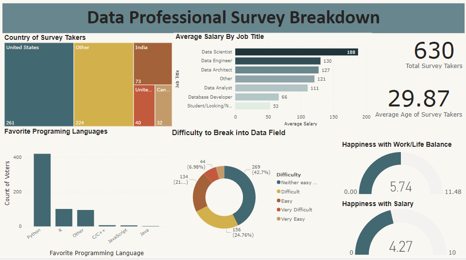
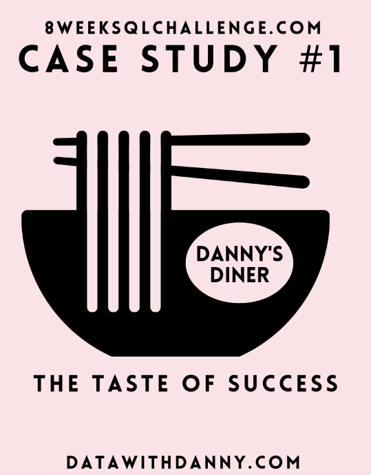

In this project, our team conceptualized and brought to life a cutting-edge Smart Home Product Estore Database System. Our system revolutionizes smart home businesses by providing an advanced database design tailored for efficient data handling, streamlined order processing, precise employee monitoring, and meticulous product tracking. It seamlessly manages both in-house inventory and supplier-supplied products. Leveraging Oracle SQL Developer, we executed pivotal database creation and manipulation operations encompassing Insert, Update, Delete, and View creation. Additionally, we implemented an array of essential DML operations including Select, Join, Where, Group By, and Having queries. Going beyond, we integrated PL/SQL procedures, functions, and ORDBMS objects to ensure a robust and comprehensive solution.
All of the analysis for this project was done using Hadoop cluster and the data was processed using Hive. By leveraging these powerful tools, large amount of data related to yelp users in the USA was efficiently processed and analyzed.

This project analyses LAPD crime data and provides insights on different crime categories and locations in the city. It also explores crime patterns in Los Angeles, aiming to distinguish the type of crime resulting in the highest victimization rate and its relation to ethnicity, age, and gender.

This project involves analysis of the the survey conducted that highlights the key insights in the data industry. It also provided an insights on transitioning into the field, salary expectation, top earning roles in data science and the favored programming language provided a comprehensive view of the industry prescpective.
Analyzing flight price enables the identification of pricing trends over time, which is crucial for airlines in developing effective pricing strategies. Utilized Spark CLI to predict flight prices by comparing different Regression models and measured the accuracy of models by calculating the Root Mean Square Error through train and cross validation.

This projet focuses on providing a comprehensive analysis of Coffee chain industry. Explored trends and insights using Python packages and libraries, such as matplotlib and seaborn. Uncovered key market dynamics, sales trends, customer behavior, market performance and more.
Delved into Spotify data to unravel patterns and insights contributing to music's popularity. The analysis aimed to provide a comprehensive understanding of music preference by employing statistical techniques and leveraging the power of ggplot2 for visualizations.

Analyzed the Dannys Dinner Restaurant data to answer a few simple questions about his customers, especially their visiting patterns, how much money they’ve spent, and also which menu items are their favorite. This deeper connection with his customers will help him deliver a better and more personalized experience for his loyal customers.